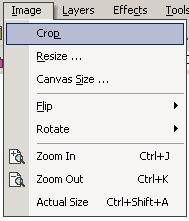

Crop Operation
|
 The Image Crop Operation (Image-->Crop) acts upon all the layers in the entire image. To perform a crop, you must first define a bounding region using either the Lasso Select Tool or the Rectangle Select Tool. Once this area is defined, the Crop Operation will be available to you. If you use the Lasso Select Tool, the new image dimensions will be defined by the greatest X and Y values of the Lasso Selection. If you use the Rectangle Select Tool, the new image dimensions will be the outline of the bounded area. |
An image altered by the Crop Operation:
| Original Image |
| Results Of A Rectangle Selection Crop |
| Results Of A Lasso Selection Area |